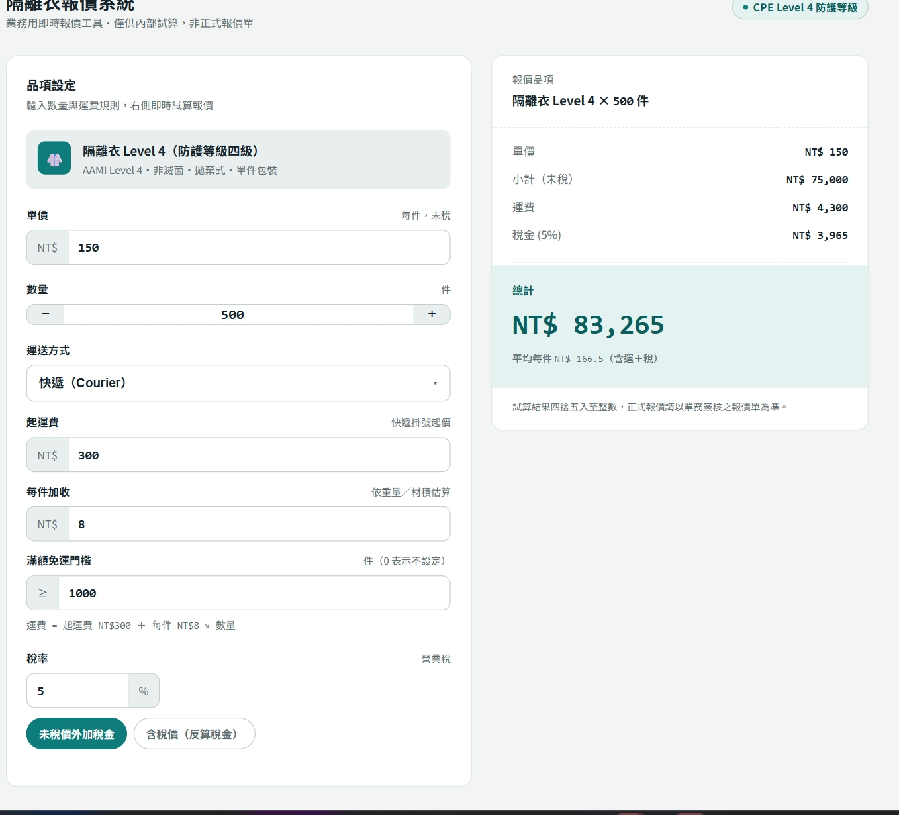
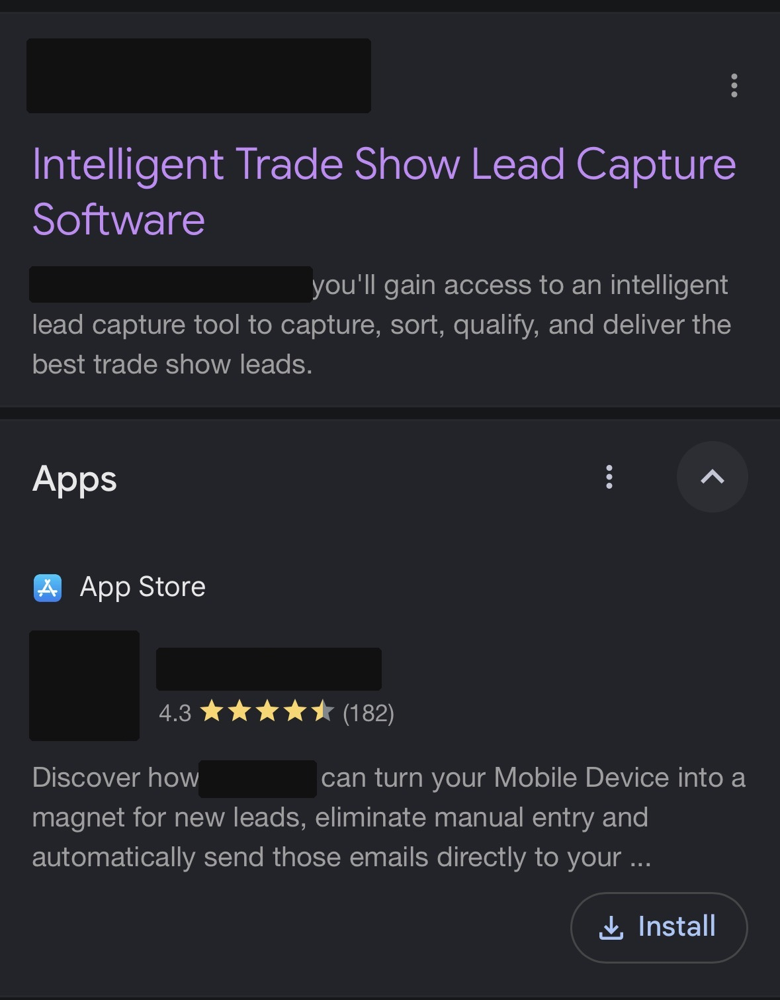
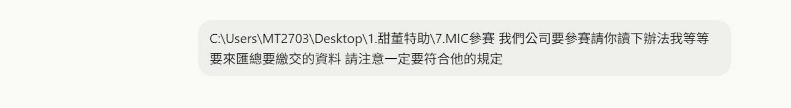

事前準備
建立專案資料夾
所有例子共用，只做一次
AI 要幫你動手，得先知道去哪動手。一句話交給 Claude Code，讓它自己在終端機把資料夾建好，不用自己點滑鼠一格一格新增。
① 先讓 Claude Code 跑起來（跟上面「開始前」一樣）：按 Win 鍵 → 輸入 powershell → Enter → 打 claude 進到對話畫面。
② 把整段複製，貼給 Claude Code：
現場用的那一句話
請在 C:\AI-Workspace\Claude\Project 底下建立六個資料夾：001-Quote、002-MPT、003-Report、004-Expo、005-Demo、Credential
✓ 成功長這樣Claude Code 自己在終端機跑建立資料夾的指令，跑完會告訴你完成了——不用自己點滑鼠新增。
③ 確認建對了：打開檔案總管（我的電腦），把這個路徑貼進網址列確認：
確認用 · 貼進檔案總管網址列
C:\AI-Workspace\Claude\Project
✓ 這一步成功長這樣視窗打開後看得到六個資料夾，編號跟左側例子編號對齊，做哪一個例子就進哪一個：
C:\AI-Workspace\Claude\Project\
001-Quote\ ← 業務報價系統（例子 1）
002-MPT\ ← 一句話影片機（例子 2）
003-Report\ ← 報表整合系統（例子 3）
004-Expo\ ← 會展掃描系統（例子 4）
005-Demo\ ← 飲料店訂購網頁（例子 5）
Credential\ ← 放金鑰／API Key 的資料夾（各例子共用，不對應特定例子）
Claude Code 說找不到路徑／權限不足怎麼辦？（備援作法）
先確認①真的有跑起來——畫面上要看到 Claude Code 的對話框，不是空白的 PowerShell。還是不行，改用滑鼠手動建：按
Win +
R 貼
C:\ 開檔案總管 → 右鍵新增資料夾，名字都點一下就複製，不用自己打：
進去
Project 之後再建六個資料夾：
例子 1 · 共 5 個
業務報價系統
隔離衣 Level 4
過去要嘛排隊等 IT，要嘛自己在 Excel 拉公式對半天，還常常算錯。現在你只要把「要什麼」講清楚——AI 直接長出一個能操作的報價介面，輸入數量，運費、稅金自動帶進去。
📁 資料夾這句話裡的 001-Quote 是一個要先存在的資料夾——在左側「0 建立專案資料夾」會一次建好，建過就不用再建。
把整段複製，貼給 Claude Code：
現場用的那一句話
C:\AI-Workspace\Claude\Project\001-Quote 我要一個業務報價系統產品是隔離衣等級4
運費税金請先幫我
拉一個
操作介面 可以輸入 數量
✓ 成功長這樣瀏覽器跑出一個報價畫面，輸入數量就自動算出金額（含運費、稅金）＝ 成功。
加碼一句：想要運費依配送方式試算？接著把這句貼給 Claude Code：
現場用的那一句話
運費我還要一個下拉選單，可以選快遞或海運，兩種運費金額不一樣，選了之後總金額要跟著重新算
✓ 成功長這樣報價畫面多一個快遞／海運下拉選單，切換選項總金額會跟著重新計算＝ 成功。
💡 換成你的不是每個部門都有「產品」可以換——先想一想：換成你自己的工作，你要算的是什麼？需要哪些數據（單價、次數、天數、人力……）？這些數據現在放在哪裡（Excel、系統、紙本）？盤點清楚了，就能套進一樣的句型。
📎 範例檔（含運送方式下拉選單的完整版，點開看）
照著上面兩句一路做下去，長出來的完整版本長這樣——可以複製圖片給 Claude Code 當畫面規格，或直接下載 HTML 檔案回去研究：
參考畫面 · 業務報價系統（含運送方式）下載圖片

⬇ 下載範例 HTML 檔案
例子 2 · 共 5 個
一句話影片機
MoneyPrinterTurbo · 站在巨人肩膀上
你不用自己寫程式——GitHub 上已經有人做好一台「影片機」。你只要跟 Claude 說「下載到哪、幫我跑起來」，它把環境裝好、網頁打開。這就是借力：借別人做好的成品。
📁 資料夾這句話裡的 002-MPT 是一個要先存在的資料夾——在左側「0 建立專案資料夾」會一次建好，建過就不用再建。
把整段複製，貼給 Claude Code：
現場用的那一句話
https://github.com/harry0703/MoneyPrinterTurbo下載到
電腦路徑C:\AI-Workspace\Claude\Project\002-MPT 網頁開啟
✓ 成功長這樣它自己把專案抓下來、裝好環境，最後瀏覽器開出影片機的操作網頁＝ 成功。
⏳ 要等這支要下載的東西比較多，跑幾分鐘是正常的——畫面一直跳字就是還在做，不要關掉。
📎 範例檔（自己輸入主題，跑出來的成品長這樣，點開看）
網頁打開後，在「視頻主題」那格打你要的內容，按生成——跑完的影片長這樣：
⬇ 下載範例影片
例子 3 · 共 5 個
報表整合系統
Finance Hub System · 用一張畫面截圖當規格書
不是每次都要打字描述介面長什麼樣——你部門已經在用的畫面，本身就是最準的規格書。把畫面截圖複製起來，貼給 Claude Code 當作第一次輸入，它能直接照圖把欄位、分區、排版都抓出來。
📁 資料夾這個例子的資料夾是 003-Report——在左側「0 建立專案資料夾」會一次建好，建過就不用再建。
① 先取得這張圖——「複製圖片」可以直接貼進 Claude Code；如果複製沒反應，改按「下載圖片」存成檔案，再拖進 Claude Code：
② 打開 Claude Code，先貼上這張圖（Ctrl+V），再把這句話一起送出：
現場用的那一句話
C:\AI-Workspace\Claude\Project\003-Report 幫我做一個長得像這張圖的記帳系統，欄位、分區、排版都照圖片，資料先用假的，不用接資料庫
✓ 成功長這樣Claude Code 照圖把基本資訊／銀行帳號資訊／金額資訊／其他資訊幾個分區跟裡面的欄位都做出來，長得跟截圖是同一套系統＝ 成功。
③ 使用者第二次追加：圖片只看得出欄位長什麼樣，看不出下拉選單裡面有哪些選項——這時候把選項依序打字告訴它：
現場用的那一句話
公司別的下拉選單，選項依序是 A、B、C、D
幣別依序是 TWD、USD、EUR、SGD、GBP、SEK、HKD、CHF、JPY、CNY
款項性質依序是 應收付貨款(費用)、銀行本金、銀行利息、手續費支出(含匯款手續費)、薪資、押標金(履保金)、資本支出(固定資產)、結售(結購)、集團資金調撥、其他
✓ 成功長這樣三個下拉選單都照順序長出對應選項，可以點開選了＝ 成功。
💡 換成你的截圖不用是自己部門的畫面——在外面看到覺得好用的服務也可以先截圖起來，再補上自己的資料、情境、要做的事，讓 AI 拿這張圖當基礎，一步步打磨成你真正要的產品。
📎 範例檔（照上面三句一路做下去的完整版，點開看）
例子 4 · 共 5 個
會展掃描系統
名片收集 App · 手機畫面 Demo（先做畫面，資料先用假的）
會展攤位收名片，平常靠人工謄打、事後才整理。這一版先只做手機操作畫面——拍名片、手動填、記訂單三個入口，走完拍照 → 表單 → 送出的流程，還沒接真的資料庫。
📁 資料夾這句話裡的 004-Expo 是一個要先存在的資料夾——在左側「0 建立專案資料夾」會一次建好，建過就不用再建。
把整段複製，貼給 Claude Code：
現場用的那一句話
C:\AI-Workspace\Claude\Project\004-Expo 做一個手機用的名片收集 app，先做畫面就好，不用真的能用。
打開會看到三個大按鈕：
📷 拍名片
✍️ 手動填
💰 記訂單
按「拍名片」→ 出現一個假的相機畫面，中間有個框
→ 按拍照 → 跳到表單頁
表單頁有這些格子：
姓名、公司、職稱、電話、Email、國家、
有興趣的產品、備註
下面兩個打勾：寄問候信、寄型錄
最下面一顆「送出」按鈕
送出後跳一頁「已儲存 ✓」
紫色系，卡片有毛玻璃感，看起來高級一點。
資料先用假的，不用接資料庫。
✓ 成功長這樣手機畫面看得到拍名片／手動填／記訂單三顆大按鈕，走完拍照 → 表單 → 送出，最後跳出「已儲存 ✓」＝ 成功。
💡 換成你的這一版只做畫面、資料是假的，先確認流程跟風格對不對；接真的資料庫是下一步。
📎 範例檔（照上面那句一路做下去的完整版，點開看）
例子 5 · 共 5 個
飲料店訂購網頁
現場 live demo（2-2）· 這一個全員親手做
一句話，當場長出一個能點餐、能記單的小系統：點品項 → 跳出視窗輸入名字 → 送出 → 看得到目前每個品項各賣了幾杯。那張你看得懂的表，就是它的「資料庫」——下週 Billy 場再教你把它搬進真正的資料庫。
📁 資料夾這句話裡的 005-DEMO 是一個要先存在的資料夾——在左側「0 建立專案資料夾」會一次建好，建過就不用再建。
把整段複製，貼給 Claude Code：
現場用的那一句話
C:\AI-Workspace\Claude\Project\005-DEMO 請幫我做一個飲料店,訂購網頁有幾個熱門的品項,直接購買彈跳視窗輸入名字，送出後可以看到訂單料表 目前個別品項購買數量多少,
⚠️ 大小寫這句話裡寫的是 005-DEMO，你建的是 005-Demo——Windows 不分大小寫，這是同一個資料夾。不用改、也不用重建。
✓ 成功長這樣網頁能下單，而且下完單看得到每個品項的累計數量＝ 成功。
💡 換成你的把「飲料店」換成你部門真的在收的東西（報修單、領料單、訂便當），句型完全一樣。
真實案例
業務部 Ellie
不會寫程式的業務，26 天做出公司在用的系統
前面五個例子講的是「一句話可以做出東西」。這一個是——我們公司真的有人這樣做完了，而且她不會寫程式。從她丟一句話過來，到系統上線給大家用，總共 26 天。
①需求就是這樣進來的3/4（三）17:08
「我想要做這個，可以如何做？」
她附的是一支國外會展掃名片系統的介紹影片。沒有規格書、沒有需求單、沒有功能清單。
💡 看這裡她不會寫程式，她只是看到一個東西，指給人看。例子 3 教你用一張圖當規格書——這裡是用一支影片。
②你只要開口，剩下的它補
影片 AI 讀不了，但 search 一下就發現：這類系統有公開的產品頁。
搜尋一下 · 這種東西別人早就做過了

把產品頁的網址丟給 AI，它自己去讀、自己整理出這種系統該有哪些功能——別人花好幾年想清楚、還被市場打過分數（4.3 星、182 則評價）的東西，你直接站上去。
然後補上最重要的那半句：
她說出口的第一句話（大意）
我要做一個這樣功能的產品，要用在公司去展覽會場的時候可以用到
💡 看這裡「要用在公司去展覽會場」——這半句是 AI 補不了、只有你自己知道的部分。少了它，做出來的是仿製品；有了它，才是你們的系統。說出第一句話，AI 幫你完整。
③第一次回你的不是文件，是一個能看的東西
AI 讀完之後，直接做出一個介面——左邊掃描、右邊自動帶出名單資料、下面是備註欄。第一版還是英文的，因為它讀的是英文產品頁。
💡 看這裡它沒有回你一份需求文件，它直接做了一個看得到的東西。從這一秒開始，討論就從「我想像中的」變成「我看著這個講——這裡要改、這欄我不需要」。
④然後就是一個流程一個流程，調成想要的中間這 26 天
這一段，是整個案例最有價值的部分——也是我們唯一教不了的部分。
因為每個人要調的東西都不一樣：你的流程、你的痛點、你部門的規矩，只有你自己知道。AI 幫你做出第一版，但要把它變成「你真的能用的那一版」，只能你自己一輪一輪試。
💡 看這裡她不是一次就成功。她試到自己的額度用完（下一張截圖裡那句 I reached my credits limit），隔天再來。我們給不了教學，只能給經驗分享。
⑤26 天後3/30（一）14:11
連結傳過來，我只回得出兩個字：fuyoh。
3/4 一句話 → 3/30 能用的系統26 天 · 全程她自己做
⑥然後就是現在你看到的這個
📁 對照這就是例子 4「會展掃描系統」的真實來源——你在例子 4 用一句話做出來的那個手機畫面，正是從這裡長出來的。
⑦你以為到這裡就結束了？
我也以為。結果她又提了新的：
「I want to learn how to really make it as an apps in the phone too」
她想把它上架到 iPhone 的 App Store 和 Google Play。
你們想學嗎？
不知道有多少人也想學這個。
想學的，現場跟 4A 小組說一聲，或直接回信給我們。
人夠多，我們就開。
真實案例
法務部 Sandy
用 AI 幫你想，不只是幫你做
Ellie 那格證明「不會寫程式也能做出系統」。這一格證明另一件事——AI 不只拿來「做東西」，也拿來「贏東西」。一份參賽申請、一份提案、一份報告，是每個部門每個月都在做的事。結果：入圍 2026 年傑出亞洲台商獎 · 企業典範獎。
①任務就是這樣掉下來的7/12（日）
「相關資料收集中，預計明天收齊，請你找 Tim、法務長及行銷同仁協做送出。」
一個連結、一句指示、隔天就要。沒有範本、沒寫過、還要跨三個部門收資料。
💡 看這裡甜董的 LINE 個人簽名檔寫著：《用 AI 幫你想，不只是幫你做》——這一格就是這句話的實證。
②她的第一句話，跟前面五個例子長得一模一樣
Sandy 給 AI 的第一句話

例子 1 是「C:\…\001-Quote 我要一個業務報價系統…」，Sandy 是「C:\…\7.MIC參賽 我們公司要參賽…」——同一個句型，只是換成法務的事。
💡 三個動作① 指路徑——先告訴它在哪工作。② 叫它先讀，不是自己讀——「請你讀下辦法」，把讀規則這件苦工交出去。③ 一開口就立硬條件——「一定要符合他的規定」。比賽最常死在不符合規定，她第一句就把合規設成前提。
✍️ 還有她打字沒標點、很口語、還有錯字（「讀下辦法」）。跟例子 1 那句「運費税金請先幫我／拉一個」一樣。不用寫得漂亮，講清楚就好。
③AI 讀完辦法，反過來跟她要資料
它沒有直接開始寫，而是告訴她還缺什麼——因為它讀過辦法，知道要交哪些東西。
💡 看這裡你不用先搞懂規則才能開始。讓它把規則讀完，它會回過頭跟你要缺的東西——這比你自己猜要交什麼可靠得多。
④別人給的原料，長這樣
Sandy 去跟各部門收資料，收回來的就是這個——一張照片，配一行很短的字，格式不一、繁簡混雜。
💡 看這裡沒有人會給你整理好的資料，這是所有跨部門任務的真實樣貌。過去卡住的就是這裡：你得先花好幾天把爛原料整理成能用的，才能開始寫。現在不用了——AI 不嫌你的原料醜。
⑤初稿出來：內容、排版、字體、對齊，一次完成
章節編號 5.1／5.2／5.3、左右分欄、圓餅圖、圖文對齊、字體統一——散在各部門的照片和短句，變成一份送得出去的文件。
💡 看這裡排版、字體、對齊，是最不值錢、卻最花時間的工作——過去通常落在最資淺的人身上，做完還沒人覺得你做了什麼。現在它跟內容一起出來。這剛好把甜董那句話補齊：想（讀懂辦法、知道缺什麼、把散料組成章節）＋做（排版、字體、對齊、圖表），一句話同時買到兩件事。
⑥然後就是一輪一輪調整
跟 Ellie 那格一樣——這段是整個案例最有價值的部分，也是我們唯一教不了的部分。每個人要調的東西都不一樣：你的流程、你的痛點、你部門的規矩，只有你自己知道。
📎 待補之後會請 Sandy 自己來分享她是怎麼一輪一輪調的。我們給不了教學，只能給經驗分享。
⑦結果
入 圍2026 年傑出亞洲台商獎 · 企業典範獎
🎉 恭喜恭喜甜董，也恭喜 Sandy。從 7/12 那則 LINE 開始，到一份送得出去的參賽文件——做的人是法務，不是行銷、不是美編、也不是外包。
DONE
5 個例子看完了
它們的共同點只有一個：你把話講清楚，它就做出來。
現在換你——把你手上最煩的那一件事講給它聽。
{kind=link}
{kind=link}
{kind=link}
{kind=link}